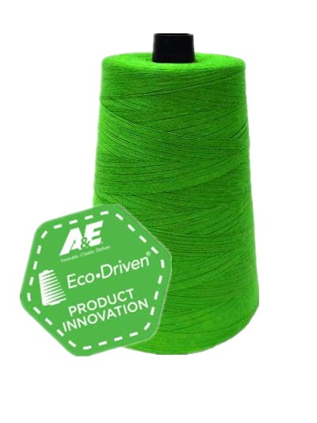
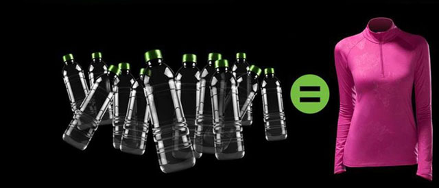

2017年3月30日，美国线业全球发布使用再生线芯的缝纫线新品—Perma Core using REPREVE®。

这是一款使用再生线芯REPREVE®的缝纫线。再生线芯是将废弃塑料瓶搜集起来，转化成聚酯纤维，再进一步加工制造而成的。美国线业发布的新品使用高性能、优质而生态友好的缝纫线芯，将可持续发展理念贯彻在行动中。随着REPREVE®新品在众多品牌上的使用，将再次流转全球。
越来越多的服装品牌商、零售商和有环保意识的顾客提出了更高的环保需求，他们希望从面辅料源头开始推行环保理念。这款新品也将应用于高品质的牛仔、工作服、男装和女装的缝纫过程中。

据悉，新产品使用的环保线芯来自REPREVE，它是一个致力将废弃塑料瓶回收再生的品牌。该品牌将废弃塑料瓶变为100%再生聚酯纤维，再制成工业品销售给全球消费品牌和零售商。REPREVE迄今已经与Adidas、New Balance、Timberland、美国线业等多家公司合作过。近年来，REPREVE应用日渐广泛，不局限于服装品牌，更延伸至非服装行业，如在Ford汽车工业品上的应用。自2009年以来，REPREVE改变了40多亿个塑料瓶的命运，他们被制造成可循环利用的再生品。
Perma Core using REPREVE®于2017年3月对全球发布，为服务于全球客户，该新品将在美国线业各生产基地进行生产，首批发售规格是Tex 40、Tex60、Tex80和Tex105。